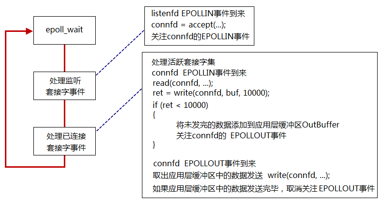
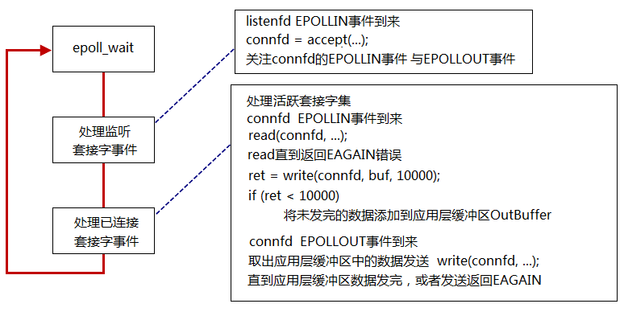

select/poll/epoll¶
让内核来监听客户端。使用进程或者线程，消耗的资源比较大。
3. epoll¶
-
eventEPOLLIN- 内核中socket接受缓冲区为空 → 低电平 → 不可读
- 内核中socket接受缓冲区不空 → 高电平 → 可读
EPOLLOUT- 内核中socket接受缓冲区为满 → 低电平 → 不可写
- 内核中socket接受缓冲区不满 → 高电平 → 可写
-
工作模式
LT电平触发：高电平触发ET边缘触发：- 低电平→高电平 触发
- 高电平→低电平 触发
-
LT模式的工作流程 
busy loop
在使用epoll_LT模型时，要注意一个忙等待事件(busy-loop)。
> 在connfd=accept(listenfd,...)获得监听套接字connfd之后，不能立即监听connfd的EPOLLOUT事件，因为刚获得connfd的接受缓冲区肯定是空的，一直处于高电平，处于可写状态。如果此时就监听那么将一直触发epoll_wait函数，会一直等待写满，即busy loop。-
正确的流程
在第一次你n=write(connfd, buffer, sizeof(BUFFER))之后，如果返回的字节数n!=sizeof(buffer)，说明socket的发送缓冲区小于应用层的buffer的缓冲区，此时需要做两件事：- 需要将未发完的数据添加到应用层缓冲区OuyBuffer
- 关注
connfd的EPOLLOUT事件
等待
connfd的EPOLLOUT事件的到来：取出应用层的缓冲区中的数据发送，write(connfd, ...)。如果应用层缓冲区中的数据发送完毕，取消关注EPOLLOUT事件。因为不取消，sokcet发送缓冲区为空后，又会触发EPOLLOUT，但是此时数据已经发送完毕，又会陷入busy loop。+ ET模式的工作流程

ET工作模式不存在LT中的busy loop，但是会有更麻烦的问题：read/write直到返回EAGAIN错误。否则程序会发送意外。
+read
在connfd=accept(listenfd,...)之后得到的connfd是边缘触发，因此不会在一开始就触发EPOLLIN/EPOLLOUT。触发
EPOLLIN事件后，如果connfd的接受缓冲区中的数据没有读取完毕，那么当connfd的又接受到新的缓冲区数据时，EPOLLIN事件不会触发。因为之前的数据没有读取完，处于高电平状态，此时又来新的数据并没有改变电平状态，因此即使有新的数据到来也无法触发EPOLLIN。同理write。重点：
read/write必须将缓冲区读完或者写满。 +EMFILE
如果在使用connfd=accept(listenfd,...)返回失败，并且返回的错误是EMFILE，那么会使得listenfd的接受缓冲区有数据为高电平。如果不清除，那么即使后面有空余的文件描述符也无法使用，因为listenfd的接受缓冲区一直处于有数据的高电平状态，无法触发EPOLLIN。
4. I/O复用模型对比¶